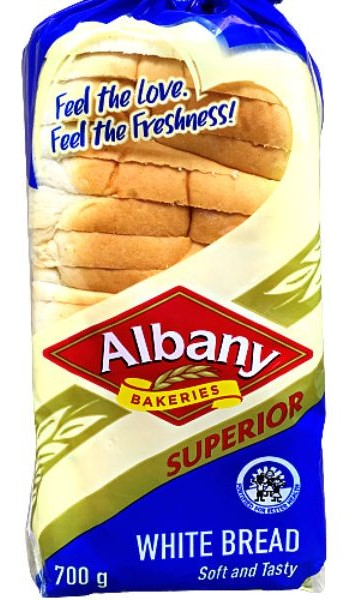
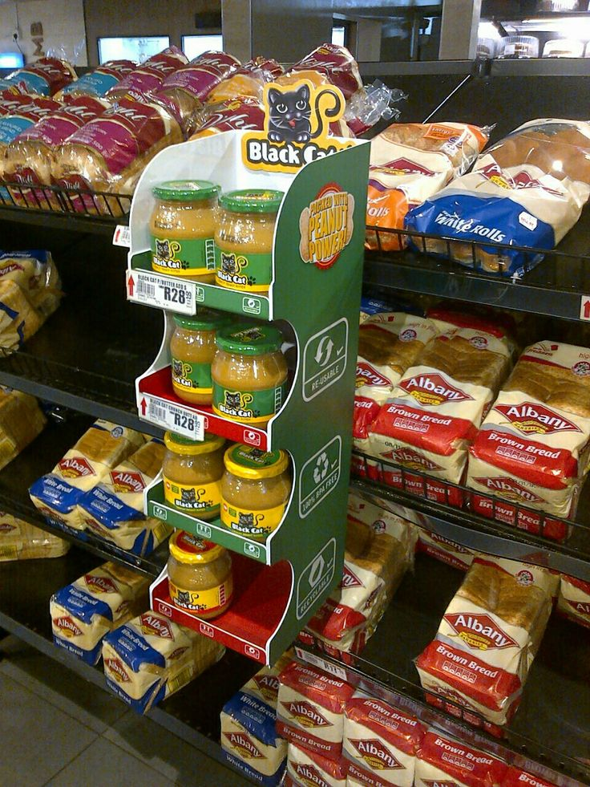
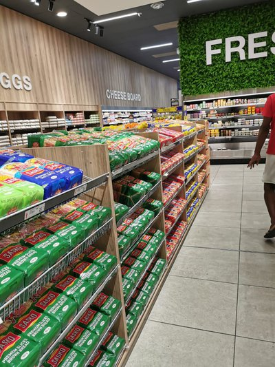

Contact
+27 011 445 4500
Email: albanybakeries@gmail.co.za

At Albany Bakery, we believe that the simple pleasure of a delicious pastry or loaf of bread has the power to bring people together and create cherished memories. That's why we pour our passion and expertise into every batch we bake, using only the finest ingredients and time-honored techniques to ensure that every product is a true delight for the senses.

Directions
You can find Albany Bakeries (Shop 105) after Starbucks Coffee Shop (Shop 101) in Food Market Avenue. Enjoy your dining adventure at Pine City Mall!